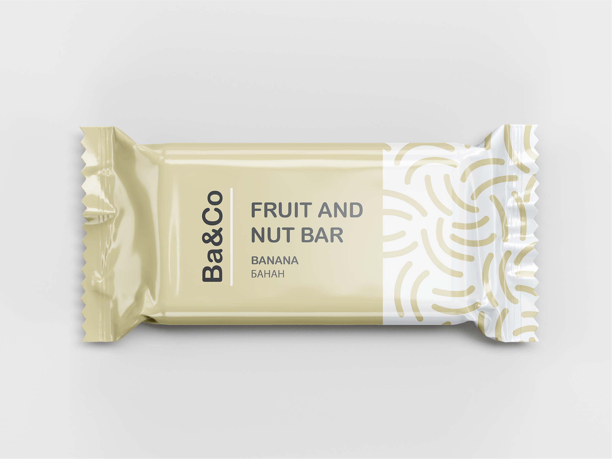

Натуральні батончики з найкращих інградієнтів зі всього світу!
Складові нашої продукції привезені з Північної та Південної Америки, сходу Бразилії, Канарських островів, Азії, Європи та східної Болівії.
Ba&Co - запорука гарного початку дня
Батончик - це завжди вдалий вибір, можна взяти з собою та перекусити в будь-якому місці. А щоб день видався й справді хорошим, візьміть ще й каву, яка виготовлена з справжніх зерен арабіки. Кожен наш батончик та напій унікальний, має власну історію та тільки натуральні компоненти. Ми любимо їх і впевнені, що вам вони теж сподобаються, адже вони особливі та виготовленні з душею.
Наш асортимент
BANANA
фініки, волоський горіх, банан, мед
MANGO
фініки, фундук, манго, ваніль
PASSION FRUIT
фініки, макадамія, бразильський горіх, маракуя

PISTACHIO
фініки, арахіс, фісташка
BLUEBERRY
фініки, кеш’ю, мигдаль, лохина
GRAPE
фініки, кеш’ю, пекан, виноград

фініки, мигдаль, лайм, кеш’ю, імбир
фініки, кеш’ю, мигдаль, малина, кокос
Special Edition
Ммм, а що це у нас тут? Так, вам не здалося, це лімітована версія наших корисних батончиків. Незвичне поєднання, проте таке вдале. Попереджаємо, будьте обережні з ними, адже їх смак змусить вас забути про все та скуштувати кожен з них.
Лайм з імбирем
- пікантне поєднання для справжніх
гурманів. Якщо Ви мрієте побувати в Азії, то цей смак буде однозначно Вам до вподоби.
Малина з кокосом
, ну що може бути краще?
Скажемо вам чесно, це наш улюблений. Ніжний смак кокосу та солодка малина не залишать байдужими до цього поєднання нікого.